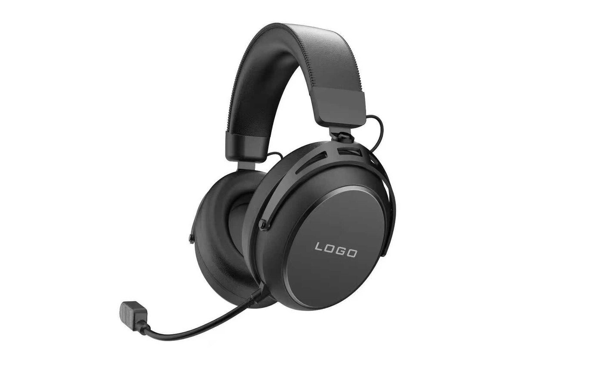
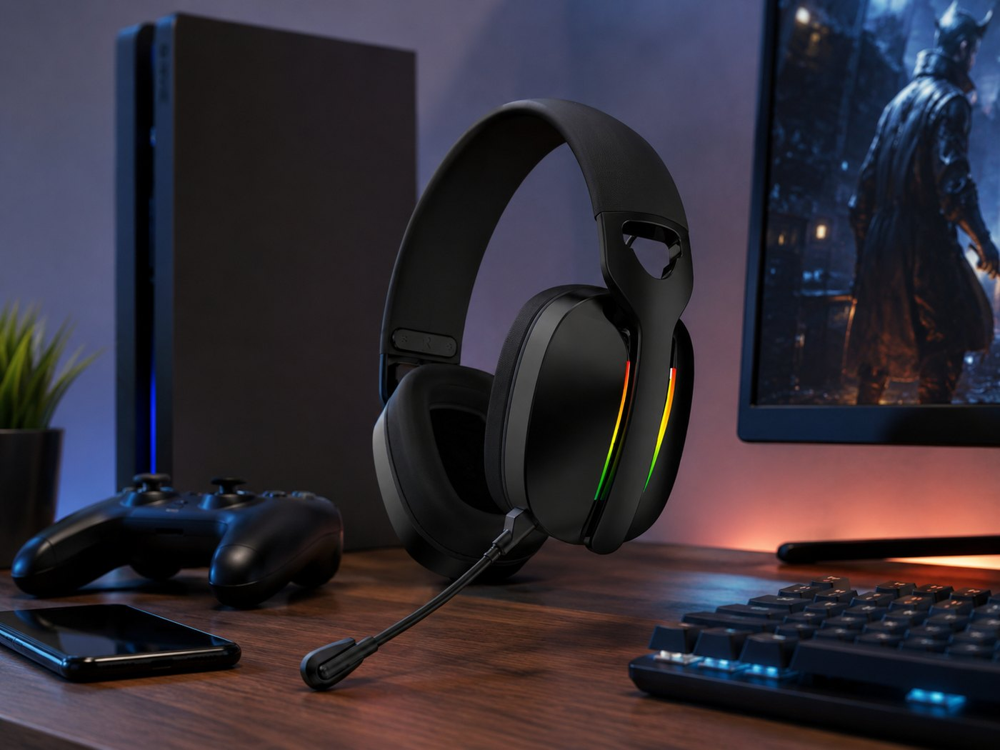

G938 Wireless Gaming Headset
2.4G, Bluetooth and wired direction with a 53 mm driver, 1000 mAh battery, about 50 hours listed with lights off and detachable microphone.

OEM gaming headsets
Compare TALRIVO G936, G938, G941, G926, G940, G935 and related gaming headset directions using real product images, current model details, sample questions and buyer-focused RFQ preparation. Buyers can compare lightweight fabric-cushion, 2.4GHz wireless, Bluetooth, wired and tri-mode headset roles before narrowing a product line.
Short answer
A focused gaming headset project starts with the destination market, sales channel, wireless connection direction and quantity range. Buyers can then shortlist models, review samples and discuss branding around the approved version.
Model selection
These cards combine supplied product images with current catalogue and specification-table data. Confirm the selected version, accessories and final sample before bulk ordering.
2.4G, Bluetooth and wired direction with a 53 mm driver, 1000 mAh battery, about 50 hours listed with lights off and detachable microphone.

50 mm driver, 1000 mAh battery, about 50 hours listed with lights off, about 20 ms 2.4G latency and detachable microphone; confirm the selected ANC version by sample.

50 mm driver direction, RGB gaming styling, 1000 mAh battery, about 50 hours listed with lights off, receiver reference and microphone image evidence.

Documented dual-driver direction, 400 mAh battery, about 20 hours listed use, about 20 ms 2.4G latency, detachable microphone and RGB styling.

Review G946 as an additional RGB model direction, with final sample version and accessory details confirmed before project planning.

2.4G, Bluetooth and wired direction with a 50 mm driver, detachable microphone and anodized aluminum frame; battery data is left for version confirmation.

Clean white gaming-headset direction with knitted fabric headband and ear cushions, RGB earcups, boom microphone, receiver and cable-set image evidence.

40 mm driver, 500 mAh battery, about 25 hours listed with lights off, about 20 ms 2.4G latency and detachable microphone in an approximately 200 g design.
Buyer decision
Use the target channel and product role to narrow the sample list. Do not rely on one generic specification or appearance claim.
Supplier evidence
A useful manufacturer page should help buyers see real models, understand the selection path and prepare questions that can be answered from product evidence.
Use visible headset shape, microphone structure, receiver or cable direction, controls, color and logo area to form the first shortlist.
Use the physical sample to confirm comfort, product finish, controls, microphone use, connection setup and accessory direction.
Discuss logo, color, packaging, manuals and accessories after the base model and sample version are clear.
Send market, channel, quantity range, model interest, sample timing, branding needs and document questions for a practical reply.
Use the connection guide when a buyer needs to distinguish USB-receiver gaming setup from direct Bluetooth pairing before choosing a wireless model.
Use the model page for a 50 mm RGB wireless headset direction with receiver, microphone, accessory and packaging evidence.
Use the comparison when the shortlist needs two existing wireless model directions reviewed before sample selection.
Product evidence example
G941 connects a model page, supplied product images, an official product showcase, a separate microphone demonstration and related buyer guides without requiring unverified commercial or performance claims.
Check its supplied color images, receiver detail, boom microphone, buyer questions and sample contact paths.
Use the official 27-second video as a visual reference for model presentation and lifestyle positioning.
Use the separate official video as supporting evidence for microphone and ENC review questions.
Compare the supplied black-red and white images, visible receiver, microphone structure and logo area.
Send the target market, sales channel, quantity range, branding needs and sample timing with the model already selected.
Product FAQ
Yes. Buyers can shortlist gaming headset models, review samples and then discuss logo, color, packaging, manual language and accessory direction for the selected version.
Start with G938 for a refined tri-mode wireless direction, G941 for a black-red hero model and video reference, G926 for a 50mm RGB wireless direction, G940 for low-latency model comparison and G935 for a cleaner 2.4G wireless direction.
Buyers often use gaming headphones as a broad search term. A gaming headset normally combines over-ear headphones with a communication microphone, which is the main product direction shown here.
Yes. Buyers can compare wired RGB, 2.4G wireless and tri-mode models before confirming samples.
Include the destination market, sales channel, connection direction, model interest, quantity range, sample timing, branding needs, packaging direction and document questions.
The approved model and sample determine the connection setup, microphone structure, logo area, accessories, product finish and packaging details that need to be confirmed.
Related pages
Share your destination market, sales channel, wired or wireless direction, quantity range, sample timing and branding needs. TALRIVO can recommend suitable models for review.